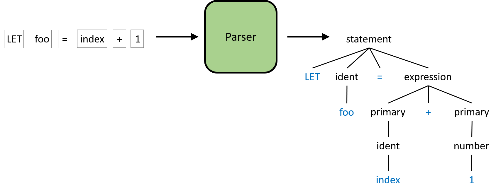
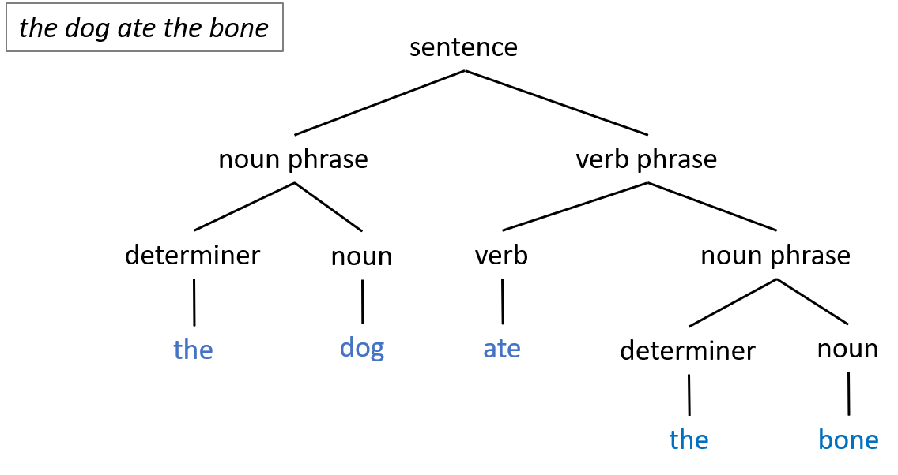
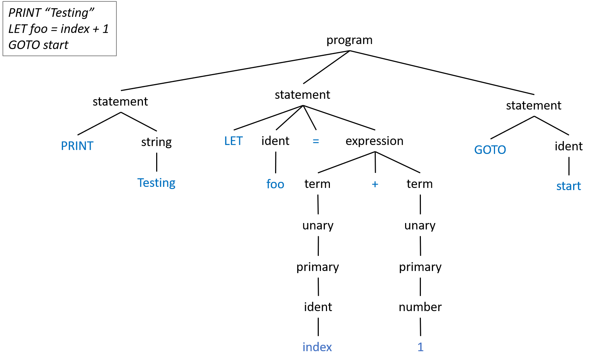
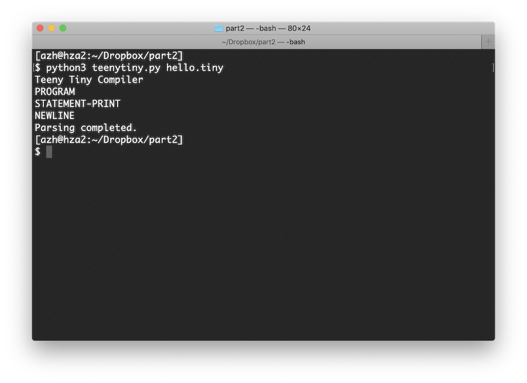
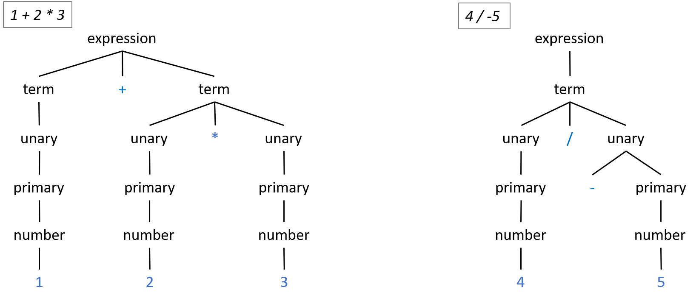

Associate Teaching Professor
Carnegie Mellon University
It is a rainy day outside, so let's continue working on our Teeny Tiny compiler. Go read part 1 if you haven't already, and don't forget that the source code can be found in the GitHub repo. This part of the tutorial does need a bit of upfront explanation, but I hope you stick with it because we are well on our way to completing our compiler!
To recap, we are making a compiler for our own programming language, Teeny Tiny. The compiler will work in three stages: (1) lexing, which breaks the input code up into small pieces called tokens, (2) parsing, which verifies that the tokens are in an order that our language allows, and (3) emitting, which produces the appropriate C code. We finished the lexer in part 1, so now we will be focusing on the parser.
The parser is the component that will make sure the code follows the correct syntax. It does this by looking at the tokens, one at a time, and deciding if the ordering is legal as defined by our language.
The figure above is a slightly simplified example of what the parser will do. The input to the parser is the sequence of tokens and the output is the parse tree. A parse tree is a more structured representation of the code than just a text string or a sequence of tokens. The process to create this tree will be discussed in the remainder of this post. I know trees can sometimes be scary, but we won't be building any complicated data structure for this. Rather, we will utilize the call stack of our parser to implicitly build the parse tree as we go.
Before we can verify the code's structure or build the parse tree though, we need to know what structures Teeny Tiny allows...
Teeny Tiny needs a grammar. This is a formal way to describe all of the code that is legal in Teeny Tiny. If you've ever had a compiler yell at you about a syntax error, it is because your code did not follow the language's grammar.
This isn't too different than when you learned about English. Take a look at this example of an English sentence and the corresponding parse tree:
The parser will perform a similar process to Teeny Tiny code.
Alright, so how do we come up with the grammar for a language? This is partially creative and partially technical. A lot of syntax is more of a stylistic choice than anything. You can even look up the formal grammar for most programming languages. Grammars are usually written in a standard notation, but the specifics of the notation don't really matter right now. We just want to be able to implement our parser.
Here is a piece of Teeny Tiny's grammar:
program ::= {statement}
This reads as: there is a grammar rule named program that is made up of zero or more statement. What is a statement? It is another grammar rule:
statement ::= "PRINT" (expression | string) nl
The statement rule here is defined as the PRINT keyword followed by either an expression or a string and then a newline. expression and nl are other grammar rules that we are referencing. string is a type of token from the lexer.
We can expand the statement rule to have multiple options, like so:
statement ::= "PRINT" (expression | string) nl
| "LET" ident "=" expression nl
Now the statement rule here is defined as one of two options: either a PRINT statement or a LET statement (the pipe symbol, |, means or). A LET statement is for assigning a value to a variable. It is defined as the LET keyword followed by an ident and a "=" then an expression and a newline. ident is a type of token from the lexer, which is a variable identifier. expression is another grammar rule which is for math expressions.
The rules tend to start very general and get more specific. Just like the English parse tree example from before. Let's examine one more type of statement...
statement ::= "PRINT" (expression | string) nl
| "LET" ident "=" expression nl
| "IF" comparison "THEN" nl {statement} "ENDIF" nl
Now our language also allows for IF statements. The important thing to notice with this rule is that it is recursive. The statement rule actually references the statement rule. This is the power of programming languages!
Here is the entire grammar for our Teeny Tiny programming language:
program ::= {statement}
statement ::= "PRINT" (expression | string) nl
| "IF" comparison "THEN" nl {statement} "ENDIF" nl
| "WHILE" comparison "REPEAT" nl {statement} "ENDWHILE" nl
| "LABEL" ident nl
| "GOTO" ident nl
| "LET" ident "=" expression nl
| "INPUT" ident nl
comparison ::= expression (("==" | "!=" | ">" | ">=" | "<" | "<=") expression)+
expression ::= term {( "-" | "+" ) term}
term ::= unary {( "/" | "*" ) unary}
unary ::= ["+" | "-"] primary
primary ::= number | ident
nl ::= '\n'+
You don't need to understand all of it just yet, we will be working through it piece by piece. The magic is that when implementing the parser, each of these grammar rules will get their own function in the Python code. It is a one-to-one mapping from grammar to code.
If you'd like to know a bit more about this notation... {} means zero or more, [] means zero or one, + means one or more of whatever is to the left, () is just for grouping, and | is a logical or. Words are either references to other grammar rules or to tokens that we have already defined in our lexer. I denote keywords and operators as quoted strings of text.
Given this grammar, our parser will produce trees like:
As you might imagine, even small programs will generate very large parse trees. That is ok! We will make the parser do the hard work! (Note: In the above example I omitted the newline rule from the trees to make it a bit smaller.)
Ok, let's finally get into the code!
We need to setup the main function to use our soon to exist parser. Update teenytiny.py with:
from lex import *
from parse import *
import sys
def main():
print("Teeny Tiny Compiler")
if len(sys.argv) != 2:
sys.exit("Error: Compiler needs source file as argument.")
with open(sys.argv[1], 'r') as inputFile:
source = inputFile.read()
# Initialize the lexer and parser.
lexer = Lexer(source)
parser = Parser(lexer)
parser.program() # Start the parser.
print("Parsing completed.")
main()
The compiler will now expect a filename as a command line argument to open for input. The parser object will control the lexer and request a new token as needed. So next, we have to implement the parser object. Create parse.py and start with:
import sys
from lex import *
# Parser object keeps track of current token and checks if the code matches the grammar.
class Parser:
def __init__(self, lexer):
pass
# Return true if the current token matches.
def checkToken(self, kind):
pass
# Return true if the next token matches.
def checkPeek(self, kind):
pass
# Try to match current token. If not, error. Advances the current token.
def match(self, kind):
pass
# Advances the current token.
def nextToken(self):
pass
def abort(self, message):
sys.exit("Error. " + message)
Like I mentioned in the previous post, I like to sketch out all of the methods that I think I need then fill them in.
The checkToken and checkPeek functions will let the parser decide which grammar rule to apply next given the current token or the next one. Add these functions to the Parser class:
# Return true if the current token matches.
def checkToken(self, kind):
return kind == self.curToken.kind
# Return true if the next token matches.
def checkPeek(self, kind):
return kind == self.peekToken.kind
In the cases that the parser already knows which grammar rule to apply, we will use the match function. It expects the current token to be something specific or else it will produce an error. In other cases, such as when checkToken is used, we just want to skip to the next token with nextToken.
# Try to match current token. If not, error. Advances the current token.
def match(self, kind):
if not self.checkToken(kind):
self.abort("Expected " + kind.name + ", got " + self.curToken.kind.name)
self.nextToken()
# Advances the current token.
def nextToken(self):
self.curToken = self.peekToken
self.peekToken = self.lexer.getToken()
# No need to worry about passing the EOF, lexer handles that.
The parser also needs to be initialized. Here is the code for __init__:
def __init__(self, lexer):
self.lexer = lexer
self.curToken = None
self.peekToken = None
self.nextToken()
self.nextToken() # Call this twice to initialize current and peek.
We will test everything momentarily.
Now that we have the core mechanics of the parser done, we now need to actually parse our language. We do this by mapping our grammar to code. For each rule in our grammar, we have a matching function in the parser. Remember how we wanted to turn our code into a tree structure? The call graph of the parsing functions that we will implement next will do that.
We are going to go through our grammar and implement a function for each rule, one by one. When the rule references another rule, we call that function. When the rule expects a specific token, we call match and when there are multiple options, we call checkToken. We will start by parsing statements, like PRINT, before moving on to parsing math expressions.
First, let's implement program. This function kicks off the parser and is the parent rule in our grammar. So let's refer back to the first line of our grammar:
program ::= {statement}
This line just means that the program is made up of 0 or more statements. To map this to code, add the following code to the end of the parser class:
# Production rules.
# program ::= {statement}
def program(self):
print("PROGRAM")
# Parse all the statements in the program.
while not self.checkToken(TokenType.EOF):
self.statement()
Just like our grammar says: this will continue to call statement until there is nothing left. See how easy that was to translate? To make it easier to know what the parser is doing, we will be printing from each function.
The next rule in our grammar is statement, which actually allows for 7 different types of rules. It is the biggest function in our parser, but it is straight forward if we break it up piece by piece. Inside of the function we will have an if condition for each of the 7 different statements. Here is the grammar for the first type of statement:
statement ::= "PRINT" (expression | string) nl
This statement expects a "PRINT" token first. Then one of two things can follow: either a math expression or a string token. Lastly, it expects a newline. Add this code to the parser class:
# One of the following statements...
def statement(self):
# Check the first token to see what kind of statement this is.
# "PRINT" (expression | string)
if self.checkToken(TokenType.PRINT):
print("STATEMENT-PRINT")
self.nextToken()
if self.checkToken(TokenType.STRING):
# Simple string.
self.nextToken()
else:
# Expect an expression.
self.expression()
# Newline.
self.nl()
To make it easier to test, we can go ahead and implement the nl function that handles newlines. We will call this at the end of the statement function, since it applies to all statements. It works by expecting at least one newline character, but allows for more. Add this function to the parser class:
# nl ::= '\n'+
def nl(self):
print("NEWLINE")
# Require at least one newline.
self.match(TokenType.NEWLINE)
# But we will allow extra newlines too, of course.
while self.checkToken(TokenType.NEWLINE):
self.nextToken()
Time to test! Create a file, hello.teeny, to use as input to the compiler with PRINT "hello, world!" as the contents. Run teenytiny.py with the input file as an argument and you should get:
It works! Our one line of Teeny Tiny code is parsed successfully. Let's try with multiple PRINT statements. Update the input code to:
PRINT "hello, world!" PRINT "second line" PRINT "and a third..."
Rerun the program. You should see:
Teeny Tiny Compiler PROGRAM STATEMENT-PRINT NEWLINE STATEMENT-PRINT NEWLINE STATEMENT-PRINT NEWLINE Parsing completed.
Fantastic! Moving on to the next type of statement, the grammar is as follows:
| "IF" comparison "THEN" nl {statement} "ENDIF" nl
This line starts with an or, so it is a continuation from the previous line in the grammar, and then expects an "IF" token. Next it refers to another grammar rule, comparison, which we will define as a function later. It will allow for the condition, like foo > 5. After that the language expects a "THEN" token followed by a newline. Then comes the body of the if statement, which allows for 0 or more statements. Lastly, it ends with an "ENDIF" token and a newline. Append this elif to the if in the statement function:
# "IF" comparison "THEN" {statement} "ENDIF"
elif self.checkToken(TokenType.IF):
print("STATEMENT-IF")
self.nextToken()
self.comparison()
self.match(TokenType.THEN)
self.nl()
# Zero or more statements in the body.
while not self.checkToken(TokenType.ENDIF):
self.statement()
self.match(TokenType.ENDIF)
Make sure self.nl() is still at the end of the statement function. We can't test this just yet, so we will move on to the next grammar rule, which is for the while loop. The grammar looks almost identical to the if statement that we just did.
| "WHILE" comparison "REPEAT" nl {statement} "ENDWHILE" nl
And the code looks similar too. Remember, this is still part of the statement function that we are adding to:
# "WHILE" comparison "REPEAT" {statement} "ENDWHILE"
elif self.checkToken(TokenType.WHILE):
print("STATEMENT-WHILE")
self.nextToken()
self.comparison()
self.match(TokenType.REPEAT)
self.nl()
# Zero or more statements in the loop body.
while not self.checkToken(TokenType.ENDWHILE):
self.statement()
self.match(TokenType.ENDWHILE)
You probably see the pattern at this point. The remaining forms of statement are also almost identical to each other:
| "LABEL" ident nl
| "GOTO" ident nl
| "LET" ident "=" expression nl
| "INPUT" ident nl
This is the last bit of code for the statement function:
# "LABEL" ident
elif self.checkToken(TokenType.LABEL):
print("STATEMENT-LABEL")
self.nextToken()
self.match(TokenType.IDENT)
# "GOTO" ident
elif self.checkToken(TokenType.GOTO):
print("STATEMENT-GOTO")
self.nextToken()
self.match(TokenType.IDENT)
# "LET" ident "=" expression
elif self.checkToken(TokenType.LET):
print("STATEMENT-LET")
self.nextToken()
self.match(TokenType.IDENT)
self.match(TokenType.EQ)
self.expression()
# "INPUT" ident
elif self.checkToken(TokenType.INPUT):
print("STATEMENT-INPUT")
self.nextToken()
self.match(TokenType.IDENT)
# This is not a valid statement. Error!
else:
self.abort("Invalid statement at " + self.curToken.text + " (" + self.curToken.kind.name + ")")
# Newline.
self.nl()
Notice the else at the end. If the parser is expecting a statement, but doesn't match any of the 7 types that we defined, it should throw an error.
Time for some testing. Update the input file to:
LABEL loop PRINT "hello, world!" GOTO loop
Running this should output:
Teeny Tiny Compiler PROGRAM STATEMENT-LABEL NEWLINE STATEMENT-PRINT NEWLINE STATEMENT-GOTO NEWLINE Parsing completed.
We should also try breaking the parser. Try a nonsensical input that won't be parsed by any of the statement forms that we implemented, like "JUMP GOTO", which should show:
Teeny Tiny Compiler PROGRAM Error! Invalid statement at JUMP (IDENT)
One quick thing before we move on. The program function currently can't handle newlines at the start of the input, but it is easy to fix that:
# program ::= {statement}
def program(self):
print("PROGRAM")
# Since some newlines are required in our grammar, need to skip the excess.
while self.checkToken(TokenType.NEWLINE):
self.nextToken()
# Parse all the statements in the program.
while not self.checkToken(TokenType.EOF):
self.statement()
The parser is really coming together! We have implemented about half of the language now. We are missing expressions. An expression is something that can be evaluated to a value, like a math expression, 1+5*3, or a boolean expression, foo>=10. Here is the grammar relevant to expressions:
comparison ::= expression (("==" | "!=" | ">" | ">=" | "<" | "<=") expression)+
expression ::= term {( "-" | "+" ) term}
term ::= unary {( "/" | "*" ) unary}
unary ::= ["+" | "-"] primary
primary ::= number | ident
This portion of the grammar may look strange or overly complicated to a reader. Why split it up into these 5 rules? Why not do something like... expression ::= primary {operator primary}? The answer is precedence.
To achieve different levels of precedence, we organize the grammar rules sequentially. Operators with higher precedence need to be "lower" in the grammar, such that they are lower in the parse tree. The operators closest to the tokens in the parse tree (i.e., closest to the leaves of the tree) will have the highest precedence. Another way to think about it is how tightly the operators bind to the operands. When parsing, if there is not an operator at a given level, then it passes through to the next level and creates a node in the tree with only one child.
By doing this, it enforces the order of operations that you might expect from a math expression. 1+2*3 should evaluate to 7, not 9. Looking at our grammar rules, the unary + and - operators are "lower" in our grammar, so they will have higher precedence than * and /, which have higher precedence than the binary + and - operators. The parse trees above illustrate this. The multiplication operator will always be lower in the tree than the plus operator. The unary negation operator will be even lower. If there are more operators with the same precedence, then they will be processed left to right. More precedence levels (and operators) can be added by following this pattern.
The comparison rule is a bit different. We don't want comparison operators (e.g., !=) to be allowed in math expressions. So to control where they are allowed (i.e., IF statements and WHILE loops), we have a special rule for them that requires at least one comparison operator. On the left and right hand side of the comparison operator is an expression. Now any place we allow only math expressions, we expect expression, and any place we allow boolean expressions, we expect comparison. The code for comparison is:
# comparison ::= expression (("==" | "!=" | ">" | ">=" | "<" | "<=") expression)+
def comparison(self):
print("COMPARISON")
self.expression()
# Must be at least one comparison operator and another expression.
if self.isComparisonOperator():
self.nextToken()
self.expression()
else:
self.abort("Expected comparison operator at: " + self.curToken.text)
# Can have 0 or more comparison operator and expressions.
while self.isComparisonOperator():
self.nextToken()
self.expression()
To make the code easier to read, I created the isComparisonOperator:
# Return true if the current token is a comparison operator.
def isComparisonOperator(self):
return self.checkToken(TokenType.GT) or self.checkToken(TokenType.GTEQ) or self.checkToken(TokenType.LT) or self.checkToken(TokenType.LTEQ) or self.checkToken(TokenType.EQEQ) or self.checkToken(TokenType.NOTEQ)
The code for expression:
# expression ::= term {( "-" | "+" ) term}
def expression(self):
print("EXPRESSION")
self.term()
# Can have 0 or more +/- and expressions.
while self.checkToken(TokenType.PLUS) or self.checkToken(TokenType.MINUS):
self.nextToken()
self.term()
The code for term and unary:
# term ::= unary {( "/" | "*" ) unary}
def term(self):
print("TERM")
self.unary()
# Can have 0 or more *// and expressions.
while self.checkToken(TokenType.ASTERISK) or self.checkToken(TokenType.SLASH):
self.nextToken()
self.unary()
# unary ::= ["+" | "-"] primary
def unary(self):
print("UNARY")
# Optional unary +/-
if self.checkToken(TokenType.PLUS) or self.checkToken(TokenType.MINUS):
self.nextToken()
self.primary()
Finally, the last piece of our grammar. A primary is either a number token or an ident token, which is a variable name. The code:
# primary ::= number | ident
def primary(self):
print("PRIMARY (" + self.curToken.text + ")")
if self.checkToken(TokenType.NUMBER):
self.nextToken()
elif self.checkToken(TokenType.IDENT):
self.nextToken()
else:
# Error!
self.abort("Unexpected token at " + self.curToken.text)
Ready to test expressions??? Put LET foo = bar * 3 + 2 in your input file and run:
Teeny Tiny Compiler PROGRAM STATEMENT-LET EXPRESSION TERM UNARY PRIMARY (bar) UNARY PRIMARY (3) TERM UNARY PRIMARY (2) NEWLINE Parsing completed.
Now try:
LET foo = bar * 3 + 2
IF foo > 0 THEN
PRINT "yes!"
ENDIF
Which should have the quite long output of:
Teeny Tiny Compiler PROGRAM STATEMENT-LET EXPRESSION TERM UNARY PRIMARY (bar) UNARY PRIMARY (3) TERM UNARY PRIMARY (2) NEWLINE STATEMENT-IF COMPARISON EXPRESSION TERM UNARY PRIMARY (foo) EXPRESSION TERM UNARY PRIMARY (0) NEWLINE STATEMENT-PRINT NEWLINE NEWLINE Parsing completed.
The parser allows nested loops and if statements too. Try it out.
LET foo = bar * 3 + 2
IF foo > 0 THEN
IF 10 * 10 < 100 THEN
PRINT bar
ENDIF
ENDIF
Yay! Everything parses!
Let's do more tests before we go for a victory lap. Run this Teeny Tiny code:
PRINT index GOTO main
So even though our input code conforms to the grammar, it is nonsensical. We are attempting to PRINT an undeclared variable and GOTO an undeclared label. The compiler should do something about this! As we are parsing, the compiler can keep track of which variables and labels have been declared as well as which labels have been goto'ed. If an undeclared variable is referenced, it can print an error. At the end of parsing, it can also check to make sure that all labels have been declared. Since labels can be goto'ed before they are referenced, we will keep track of both labels and gotos.
Update __init__ to initialize three sets:
def __init__(self, lexer):
self.lexer = lexer
self.symbols = set() # Variables declared so far.
self.labelsDeclared = set() # Labels declared so far.
self.labelsGotoed = set() # Labels goto'ed so far.
self.curToken = None
self.peekToken = None
self.nextToken()
self.nextToken() # Call this twice to initialize current and peek.
Now when we parse a label or goto statement, we should update the sets. Replace the code for label and goto in the statement function with:
# "LABEL" ident
elif self.checkToken(TokenType.LABEL):
print("STATEMENT-LABEL")
self.nextToken()
# Make sure this label doesn't already exist.
if self.curToken.text in self.labelsDeclared:
self.abort("Label already exists: " + self.curToken.text)
self.labelsDeclared.add(self.curToken.text)
self.match(TokenType.IDENT)
# "GOTO" ident
elif self.checkToken(TokenType.GOTO):
print("STATEMENT-GOTO")
self.nextToken()
self.labelsGotoed.add(self.curToken.text)
self.match(TokenType.IDENT)
The way this works is that if a label already exists in labelsDeclared, then it means the code is attempting to declare it twice. That is not allowed, so the compiler aborts with an error message. If it doesn't already exist, then add it to the set. Whenever GOTO is parsed, insert the label into labelsGotoed. This can occur multiple times.
To verify that there is not a GOTO to an undeclared label, we need to update program. Once the parsing is complete, the compiler just needs to ensure that all of the labels in labelsGotoed are also in labelsDeclared.
# program ::= {statement}
def program(self):
print("PROGRAM")
# Since some newlines are required in our grammar, need to skip the excess.
while self.checkToken(TokenType.NEWLINE):
self.nextToken()
# Parse all the statements in the program.
while not self.checkToken(TokenType.EOF):
self.statement()
# Check that each label referenced in a GOTO is declared.
for label in self.labelsGotoed:
if label not in self.labelsDeclared:
self.abort("Attempting to GOTO to undeclared label: " + label)
That takes care of labels. The last thing the parser needs to do is check that variables are declared. In a LET or INPUT statement, we will add it to a set of declared variables if it doesn't already exist. If a variable is referenced in an expression, the parser will check that it has been declared first.
Update LET in statement:
# "LET" ident = expression
elif self.checkToken(TokenType.LET):
self.nextToken()
# Check if ident exists in symbol table. If not, declare it.
if self.curToken.text not in self.symbols:
self.symbols.add(self.curToken.text)
self.match(TokenType.IDENT)
self.match(TokenType.EQ)
self.expression()
Update INPUT in statement:
# "INPUT" ident
elif self.checkToken(TokenType.INPUT):
self.nextToken()
#If variable doesn't already exist, declare it.
if self.curToken.text not in self.symbols:
self.symbols.add(self.curToken.text)
self.match(TokenType.IDENT)
Then update primary:
# primary ::= number | ident
def primary(self):
print("PRIMARY (" + self.curToken.text + ")")
if self.checkToken(TokenType.NUMBER):
self.nextToken()
elif self.checkToken(TokenType.IDENT):
# Ensure the variable already exists.
if self.curToken.text not in self.symbols:
self.abort("Referencing variable before assignment: " + self.curToken.text)
self.nextToken()
else:
# Error!
self.abort("Unexpected token at " + self.curToken.text)
Those are the last changes to the parser! Now test it with the same input as last time and you should see...
Teeny Tiny Compiler PROGRAM STATEMENT-PRINT EXPRESSION TERM UNARY Error! Referencing variable before assignment: index
Now it reports an error, as it should.
Try running the compiler with one final input that is a bit more complex:
PRINT "How many fibonacci numbers do you want?"
INPUT nums
PRINT ""
LET a = 0
LET b = 1
WHILE nums > 0 REPEAT
PRINT a
LET c = a + b
LET a = b
LET b = c
LET nums = nums - 1
ENDWHILE
:) Congratulations, our Teeny Tiny parser is complete! The output may not be pretty at the moment, but doing this has made it very easy for the next phase: emitting code. The source code can be found in the Github repo.
Continue on to part 3 of this tutorial to learn how to emit code from the compiler. Other recommended reading: